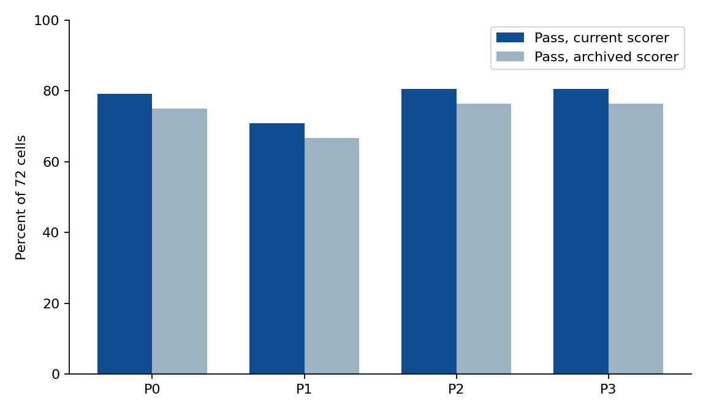

海事 SysML 考试
已保存答卷的成绩。各批分开计，不合成一个总分。
合成数字，不是 RTX 规格。官方 Pilot 判语法。清单判规定的数字和功率。第二个模型只作对照。
能说什么
| 问题 | 已保存的结果 |
|---|
| 主力模型四种写法，哪一种更合算？ | qwen3.8-flash，24 题 × 4 种 × 3 遍 = 288 格。P0 通过 57/72 · P1 通过 51/72 · P2 通过 58/72 · P3 通过 58/72。每千 token 的通过数 P0 最高。P1 返工没有超过 P0。P2、P3 只比 P0 多 1 格，token 大约是三倍。 |
| 失败是不是改个数字就能过？ | 按现行判分 64 格失败，其中 34 格死在官方语法。官方能解析的 104 份 GEN/MOD 答卷里，没有一份改过必须保留的数（包括上限）；另外 39 份没有通过官方解析或没有官方运行记录，无从判断。MOD-05 的设计必然超预算（78 W 对 60 W）；12 格都没改上限、该保留的数都在，按现行判分算通过。 |
| 现成编程代理和主力矩阵是同一批吗？ | 不是。OpenCode（qwen3.8-flash）24 格、Claude Code 加 qwen3.8-max 24 格单独列表。不能和 288 格加总。 |
| 第二个模型能不能当裁判？ | 不能。qwen3.8-max 看完全部 288 份 flash 答卷，和工具一致 157/288。它把 70 份工具判失败的卷说成通过，其中 MOD-05 的 12 份超功率全部被说成通过。Jev jev-1.13.0 一致 226/288，误判通过 32 格，全是官方语法都过不了的写新模型题。分数不因此改写。 |
| 跑这些花了多少钱？ | 按阿里云中国（北京）区标价，主力矩阵四种写法合计约 $0.048；OpenCode 做 24 题 $0.139。见第 6 节。 |
1. 测的是什么
24 道合成海事题，五种：写出模型、修改模型、读模型、缺信息时提问、把模型读回文字。标准答案在阅卷时使用，不放进考生提示。生成和修改题先过官方 SysML v2 Pilot。语法通过之后，清单核对规定的名字、连接、必须保留的数，以及检查结果是否和标准答案预期一致。MOD-05 的清单写明功率检查应为失败：设计判定是失败，但老实作答的题目判定是通过。
判分规则在 10 月 3 日改过一次。原规则下，有功率检查的题直接拿功率结果当题目结果，必须保留的数也不计入结果：MOD-05 老实作答被记为失败，把上限改成 80 W 的试卷反而记为通过（用四份手写试卷经官方 Pilot 验证过）。现行规则：题目通过 = 官方语法通过，必须存在的名字和连接都在，没有多写数字，必须保留的数没改，清单里的检查结果和标准答案预期一致。 已保存的 143 份 GEN/MOD 答卷都按现行规则重算，结果在 analysis/rescore-20261003.jsonl，原判和现判并列。只有 MOD-05 的答卷结果变了。
语法通过不是工程验收。没有功率检查的题，工程状态记为 UNKNOWN，只表示清单没有一项功率预算可算。
2. 主力矩阵：qwen3.8-flash
288 格：224 通过，64 失败（原判 212 通过，76 失败）。来源是 analysis/heldout-20261003T000045/results.jsonl（96 格）和 analysis/heldout-20261003T001321/results.jsonl（192 格），GEN/MOD 按 analysis/rescore-20261003.jsonl 重算。

图 1. 每种写法 72 格。深色是现行判分，浅色是原判。差别只来自 MOD-05 的 3 格：设计超预算，上限没改，现行判分算通过。
| 写法 | 通过 / 72 | 原判通过 / 72 | token | 每千 token 的通过数 |
|---|
| P0 直接写 | 57 | 54 | 31190 | 1.828 |
| P1 按报错再改，最多 3 次 | 51 | 48 | 50377 | 1.012 |
| P2 先列提纲再写 | 58 | 55 | 89059 | 0.651 |
| P3 提纲加关键词笔记 | 58 | 55 | 105304 | 0.551 |
| 题型 | 格数 | 通过 | 失败 |
|---|
| GEN 写出 | 60 | 26 | 34 |
| MOD 修改 | 60 | 60 | 0 |
| QRY 读模型 | 60 | 43 | 17 |
| AMB 缺信息 | 48 | 38 | 10 |
| RT 读回 | 60 | 57 | 3 |
下表是每种写法三次里通过几次。MOD-05 的 3/3 是题目判定：设计超预算，但上限和该保留的数都没改。
| 题 | P0 | P1 | P2 | P3 | 12 格中通过 |
|---|
| GEN-01 | 2/3 | 2/3 | 2/3 | 3/3 | 9/12 |
| GEN-02 | 3/3 | 2/3 | 3/3 | 2/3 | 10/12 |
| GEN-03 | 0/3 | 0/3 | 0/3 | 0/3 | 0/12 |
| GEN-04 | 0/3 | 1/3 | 0/3 | 0/3 | 1/12 |
| GEN-05 | 0/3 | 0/3 | 3/3 | 3/3 | 6/12 |
| MOD-01 | 3/3 | 3/3 | 3/3 | 3/3 | 12/12 |
| MOD-02 | 3/3 | 3/3 | 3/3 | 3/3 | 12/12 |
| MOD-03 | 3/3 | 3/3 | 3/3 | 3/3 | 12/12 |
| MOD-04 | 3/3 | 3/3 | 3/3 | 3/3 | 12/12 |
| MOD-05 | 3/3 | 3/3 | 3/3 | 3/3 | 12/12 |
| QRY-01 | 1/3 | 0/3 | 2/3 | 2/3 | 5/12 |
| QRY-02 | 2/3 | 3/3 | 1/3 | 0/3 | 6/12 |
| QRY-03 | 3/3 | 3/3 | 2/3 | 3/3 | 11/12 |
| QRY-04 | 2/3 | 2/3 | 3/3 | 2/3 | 9/12 |
| QRY-05 | 3/3 | 3/3 | 3/3 | 3/3 | 12/12 |
| AMB-01 | 2/3 | 1/3 | 1/3 | 2/3 | 6/12 |
| AMB-02 | 3/3 | 2/3 | 2/3 | 3/3 | 10/12 |
| AMB-03 | 3/3 | 3/3 | 3/3 | 3/3 | 12/12 |
| AMB-04 | 3/3 | 2/3 | 3/3 | 2/3 | 10/12 |
| RT-01 | 3/3 | 3/3 | 3/3 | 3/3 | 12/12 |
| RT-02 | 3/3 | 3/3 | 3/3 | 3/3 | 12/12 |
| RT-03 | 3/3 | 3/3 | 3/3 | 3/3 | 12/12 |
| RT-04 | 3/3 | 3/3 | 3/3 | 3/3 | 12/12 |
| RT-05 | 3/3 | 0/3 | 3/3 | 3/3 | 9/12 |
3. 64 格失败怎么分
分类读已保存的官方诊断和答卷，没有重新调用模型。明细在 analysis/failure-classes.jsonl。
| 类别 | 格数 |
|---|
| syntax-real-or-import | 22 |
| query-renamed | 16 |
| syntax-connection | 8 |
| missed-topic | 6 |
| syntax-other | 4 |
| no-question | 4 |
| missing-phrase | 3 |
| query-wrong-number | 1 |
64 格没有对上清单。其中 34 格是官方语法，16 格是合格名没写成 ::，1 格是 QRY-03 把连接数答成 2，标准答案是 3。原分类里的 12 格「设计好的功率失败」按现行判分已算通过，不在表里。
no-question 的 4 格要单独看：这几份答卷都用祈使句提出了澄清请求（例如 “Please clarify whether the uplink value is 8 (unitless) or 8 MHz.”），没有写数字，但没有问号；判分程序按文本里有没有 “?” 判断是否提问。要不要放宽属于答案清单的修改，等第二审核人决定，目前仍算失败。
4. 另外两批考生，不并进 288
| 批次 | 模型与入口 | 结果 | 文件 |
|---|
| OpenCode v1.18.27 | qwen3.8-flash（和主力矩阵同一个模型），命令行，24 题各一次 | 21 通过，3 失败。失败是 MOD-02（语法 无包，工程 未进入清单）；MOD-03（语法 无包，工程 未进入清单）；MOD-04（语法 无包，工程 未进入清单）。MOD-05 设计超预算、上限没改，现行判分算通过（原判失败）。 | analysis/opencode-20261003T001321/results.jsonl |
| Claude Code，第一次 | qwen3.8-max，经本机 Qwen 路由 | 21 通过，1 失败（GEN-04），2 次没交卷（MOD-01、QRY-02）。没交卷不计失败。MOD-05 现行判分算通过（原判失败）。 | analysis/claude-qwen-20261003T014507/results.jsonl |
| Claude Code，四题重跑 | 同一路由，不设时限 | GEN-04 PASS、MOD-01 PASS、MOD-05 PASS、QRY-02 PASS。用重跑的行盖住第一次没通过的题之后，这一批是 24 通过、0 失败。 | analysis/claude-qwen-20261003T034819/results.jsonl |
网页上的空会话「RTRC 海事题」没有消息，不在这张表里。OpenCode 的证据是上面这 24 次命令行答卷。
5. 第二个模型看 288 份 flash 答卷
裁判是 qwen3.8-max。288 格里一致 157 格，误把失败说成通过 70 格。文件是 analysis/validator-all-max.jsonl。它不改第 2 节的通过数。裁判的问法写明超预算算失败，所以和它比的是工具的设计判定；只有 MOD-05 的设计判定（失败）和题目判定（通过）不同。
第二个裁判是 Jev jev-1.13.0（TypeSafe），同样看 288 份。一致 226 格，误判通过 32 格（全是写新模型题，官方语法都过不了），误判失败 30 格。文件是 analysis/jev-heldout-20261003.json。也不计分。
6. 花了多少钱
单价按阿里云 Model Studio 中国（北京）区标价，2026-10-03 核对，每百万 token 美元：qwen3.8-flash 输入 $0.113、缓存读 $0.014、输出 $0.382（国际区 $0.15 / $0.47）；qwen3.8-max 输入 $1.65、缓存读 $0.206、输出 $4.951（国际区 $2.0 / $6.0）；jev-1.13.0 输入 $0.042、输出 $0.0。Jev 按 OpenRouter 页面的价格。本机调用的接口在北京区，所以主数字用北京区价。
| 分组 | 项目 | 模型 | 输入 token | 其中缓存读 | 输出 token | 美元 |
|---|
| 主力矩阵（72 格） | P0 直接写 | qwen3.8-flash | 25,332 | 0 | 5,858 | $0.0051 |
| 主力矩阵（72 格） | P1 按报错返工 | qwen3.8-flash | 39,738 | 0 | 10,639 | $0.0086 |
| 主力矩阵（72 格） | P2 先列提纲 | qwen3.8-flash | 66,930 | 0 | 22,129 | $0.0160 |
| 主力矩阵（72 格） | P3 提纲 + 检索笔记 | qwen3.8-flash | 81,393 | 0 | 23,911 | $0.0183 |
| 现成 agent | OpenCode（24 题） | qwen3.8-flash | 4,938,561 | 4,543,744 | 80,338 | $0.1389 |
| 裁判 | Jev 判 288 格 | jev-1.13.0 | 72,462 | 0 | 5,506 | $0.0030 |
| 其他实验 | 图检索读模型（5 题） | qwen3.8-max | 922 | 0 | 145 | $0.0022 |
| 其他实验 | SysEngBench（20 题） | jev-1.13.0 | 3,453 | 0 | 874 | $0.0001 |
| 第二部分 | 一次运行（整次记录） | qwen3.8-max | 4,634 | 0 | 2,117 | $0.0181 |
| MOD 变更链 | 一次运行 | qwen3.8-max | 727 | 0 | 441 | $0.0034 |
没有记录用量、不在表里的：qwen3.8-max 当裁判看 288 份答卷：当时没有记录 token。 Claude Code 两批共 28 次作答：经 CCR 路由，没有拿到用量。 PURE 两题：没有记录 token。 第二部分有 4 次运行只记了需求、设计和权衡，对齐和读回两步没有记；之后的运行整次都记。 MOD 变更链有 5 次运行早于用量记录，没有记；之后的运行整次都记。
7. 三条可以指着讲的旧记录
| 记录 | 题面里有的 | 考生交的 | 判定 |
|---|
| MOD-05，flash 全部 12 格，以及 OpenCode、Claude | 功率上限 60，三笔功耗 41、25、12 | 语法通过，数字还在，上限没改 | 设计判定失败：78 > 60，和标准答案预期一致。题目判定通过。 |
| MOD-01 回放 | 加上红外相机，上限保持 60 | 官方语法通过 | 清单通过。审批门没有人改 60。回读里有红外和 60。见 analysis/demo-mod01.json。 |
| 图检索五题，单独一批 | 不把整份模型交给模型，只给词匹配的节点和一跳邻居 | qwen3.8-max | QRY-01、02、04、05 通过。QRY-03 答 0 条连接，标准答案是 3。见 analysis/graph-query-max.json。这不是论文里的 0.904。 |
8. 这份成绩还不能说的事
| 还没做 | 因此不能写的句子 |
|---|
| 第二个人还没有签 24 道标准答案，FREEZE.md 还没写 | 不能写题库已经冻结。 |
| 没有独立人工看图复核 | 不能把工具通过写成工程师已经接受该设计。 |
| Cameo 企业助手没有许可；社区版安装包已下载，还没装好打开 | 不能写和厂商 AI 比过。 |
| Syside 免费编辑器已安装；命令行批量检查仍要付费许可 | 不能写第二套检查器已经跑完 288 格。 |
| 151 道 SysMBench 还没有带许可证的文件 | 不能写和公开 151 题对照过。 |
| PURE 只有两份摘录（qwen3.8-max 两题都对，见 analysis/pure-20261003T052120/） | 不能写需求抽取已经测完。 |
| AMB 的提问按问号判，祈使句的澄清请求算失败；第二审核人还没决定要不要放宽 | 不能把 AMB 的失败都写成“没有提问”。 |
9. 文件对照
| 内容 | 路径 |
|---|
| 本页数字 | tables/flash_by_config.csv，flash_by_type.csv，flash_by_task.csv |
| 图 1 | figures/flash_config.png |
| 失败分类说明 | docs/failure_taxonomy.md |
| 重算本页 | python3 analysis/report/build_exam_report.py |